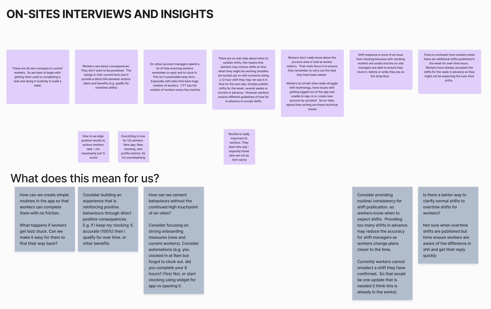
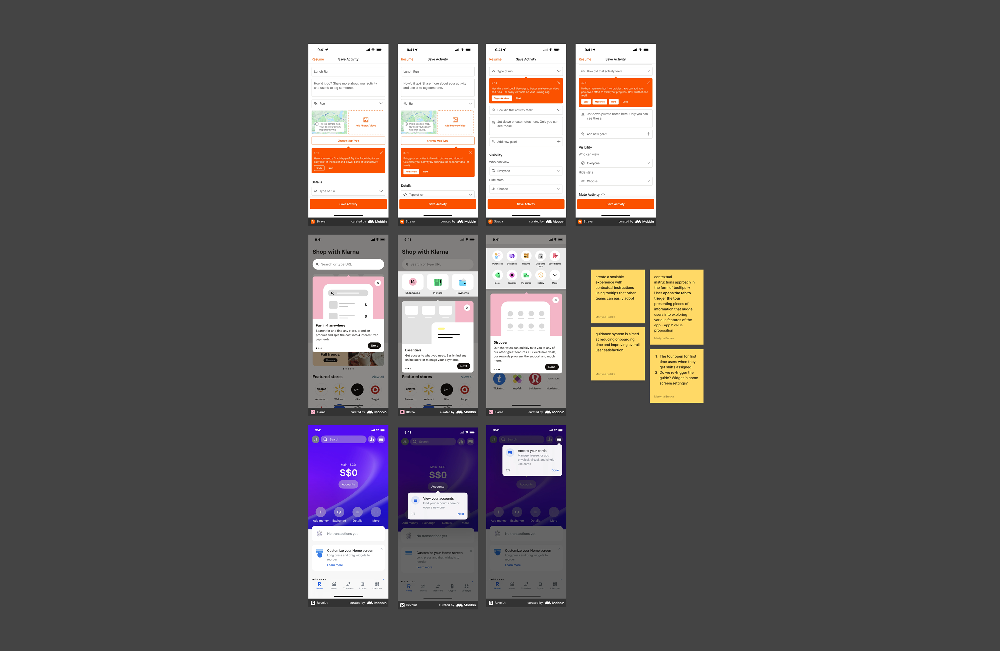
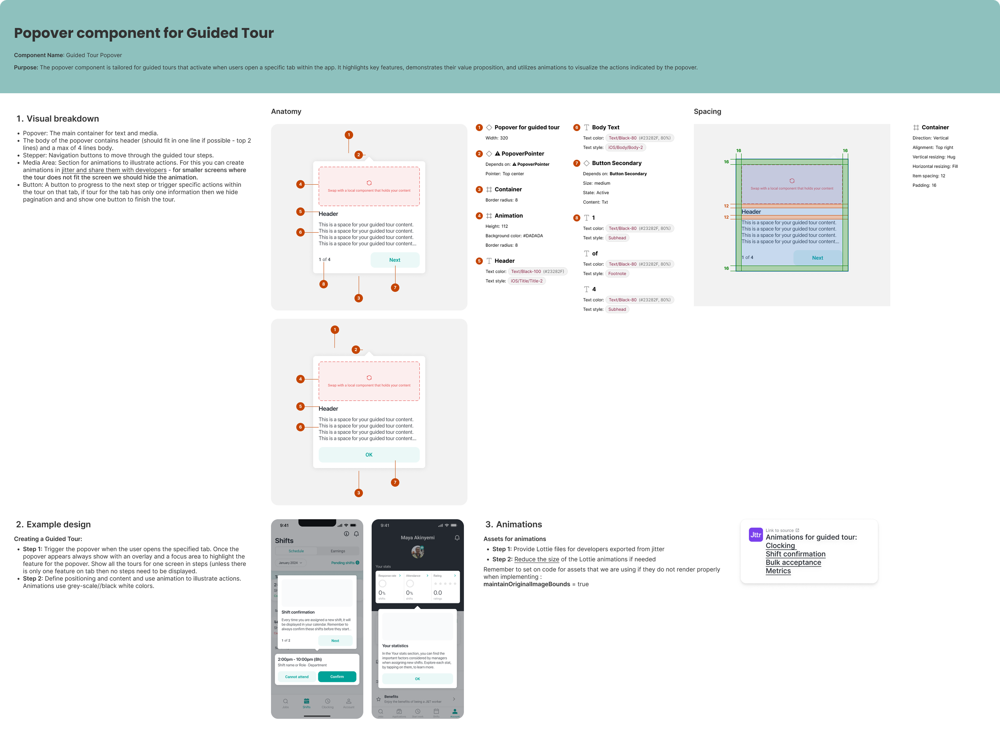

Scaling activation without scaling humans
Job&Talent · Product Designer (IC Lead)
Native Mobile (iOS & Android) · Discovery → Design System Documentation
The Challenge
The J&T app was built to help frontline workers organise their schedules and clock in on time — but we had an invisible dependency baked into the product: human onboarding. On-site J&T managers were doing the heavy lifting that the app itself wasn't doing.
As we scaled to more locations, that dependency became a liability. Sites without dedicated on-site support showed measurably worse engagement — and the gap was wide enough to raise a strategic question: were we shipping an app, or a service that required a person to operate it?
Baseline data — shift response rate:
A 10-point gap in a metric that directly affects payroll accuracy, site operations, and client trust was the forcing function for this project.
Discovery & Research
Before designing anything, I ran interviews with on-site managers to understand what they were actually doing during worker onboarding. The pattern was consistent across sites: managers weren't just handing workers a phone — they were narrating the why behind each feature in the context of the worker's daily routine.
"They don't know why they need to open the app. I show them — this is how you see your shift, this is how you clock in, this is how you get paid correctly." — On-site Manager

The interviews revealed that the core onboarding problem wasn't discoverability — workers could find the features. The problem was motivation and meaning: workers didn't understand the connection between in-app actions and real-world outcomes (pay, schedule visibility, fewer disputes).
This maps directly to Fogg's Behavior Model (B = MAP): the app had sufficient Ability but lacked the Motivation signal — workers didn't know why an action mattered. On-site managers were acting as the missing Prompt. The design challenge became encoding that human context into the product itself.
My Role
I led end-to-end design from problem framing through to design system documentation:
- Stakeholder and manager interviews to map the informal onboarding behaviour we needed to replace
- Competitive analysis of guided tour patterns (tooltips, coach marks, progressive disclosure)
- Audit of existing onboarding elements — several were partially implemented and inconsistently applied across the app
- Interaction design for the contextual tooltip system, including trigger logic and sequencing
- Design system documentation so other teams could implement the component without reinventing it
Solution
Rather than a single walkthrough at first launch — which suffers from poor retention due to cognitive overload at the moment of highest uncertainty — I proposed a contextual tooltip system triggered by tab navigation.
Research on progressive disclosure consistently shows that just-in-time information outperforms front-loaded tutorials. Presenting guidance at the moment of intended action reduces extraneous cognitive load and increases procedural retention.

Each tooltip was written around the worker's outcome, not the feature's function. Instead of "tap here to confirm your shift," the copy led with consequence: understanding why clocking in on time protects your pay record. This framing shift — from UI instruction to behavioral consequence — was directly informed by what on-site managers were saying during their verbal walkthroughs.
I also audited existing onboarding components already in the app — coach marks, empty-state explainers, feature callouts — most of which were implemented inconsistently or not at all. The audit became the foundation for a shared design system component with documented trigger logic, so other teams could implement contextual guidance without ad-hoc solutions.
Design System Component

The popover component was built as a reusable design system element, complete with documentation for implementation guidelines, animation specs, and trigger logic. This ensured consistency across the app and enabled other teams to implement contextual guidance without creating one-off solutions.
Impact
Impact Metrics
Shift Response Rate
(no on-site support)Onboarding Completion
end-to-end flowThe gap between supported and unsupported sites narrowed significantly. Sites that previously depended on on-site managers to drive adoption now had a product-native mechanism doing equivalent work — at scale, without headcount.
The design system component gave other product teams a reusable, documented pattern for contextual education, reducing one-off implementations and improving consistency across the app.
Learnings
The human workaround is the design brief
When users rely on a person to explain your product, that person is doing the UX work your product hasn't done yet. Interviewing on-site managers didn't just validate a problem — it gave us the script for the solution.
Motivation before mechanics
Workers didn't need better instructions. They needed to understand the stake — why a feature mattered to their pay and schedule. Framing onboarding around consequences rather than UI actions was the core insight that moved the metric.
Consistency is a design deliverable
Building the component into the design system meant the work compounded. Other teams could implement contextual guidance without reinventing the pattern, reducing inconsistency and future debt.
Operational data makes the design case
The 10-point engagement gap between supported and unsupported sites wasn't just a product problem — it was a business argument. Quantifying the cost of the status quo is what gave the project priority on a roadmap driven by client-facing features.